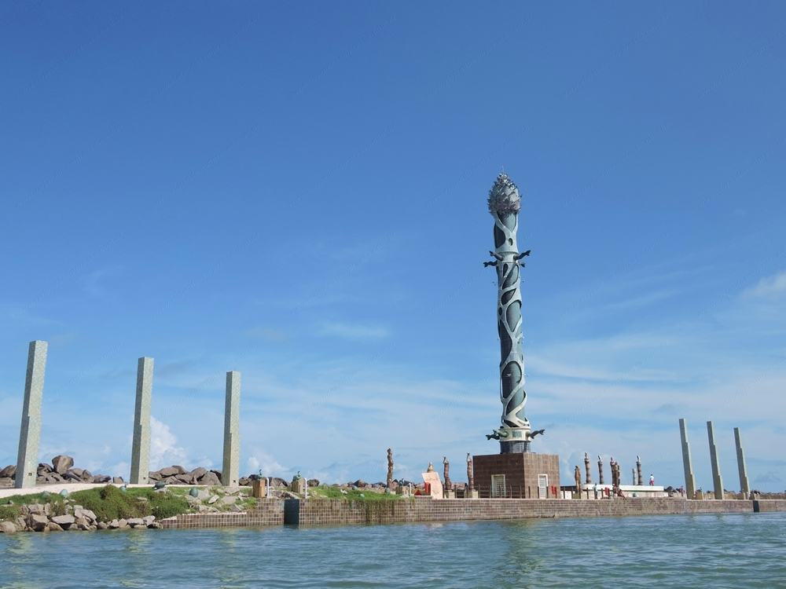
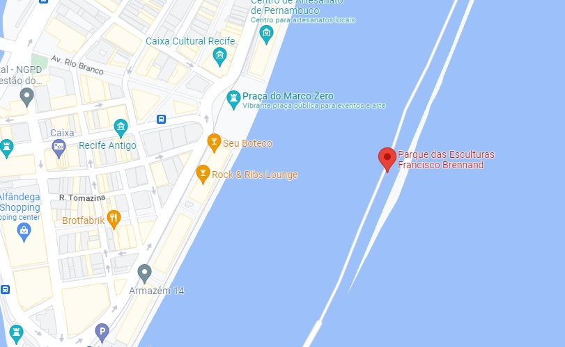

O Parque das Esculturas Francisco Brennand é um museu de arte a céu aberto localizado na cidade do Recife, capital do estado brasileiro de Pernambuco. Constitui um dos principais feitos do artista plástico pernambucano Francisco Brennand.
Idealizado na década de 1990 como parte do projeto “Eu vi o mundo… Ele Começava no Recife” para comemoração dos 500 anos do descobrimento do Brasil, o parque foi inaugurado em 29 de dezembro 2000.
Ao total, existem 90 esculturas criadas por Francisco Brennand, sendo a principal obra no complexo a Torre de Cristal, com 32 metros de altura e confeccionada em argila e bronze.